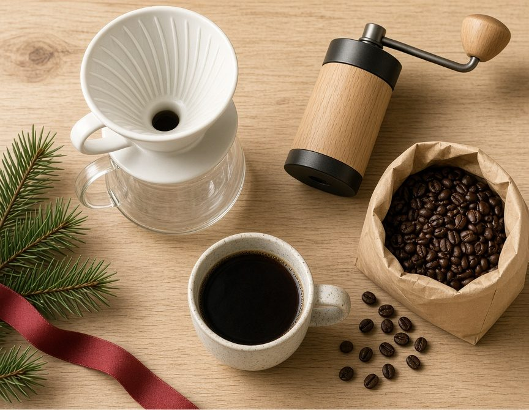

Gifts for Coffee Lovers Under $50

This guide contains affiliate links. If you buy something through one of them, we may earn a small commission at no extra cost to you. As an Amazon Associate I earn from qualifying purchases. Full disclosure here.
These are fit-for-purpose picks, not a hands-on test. We have not brewed with every item here. Prices move — check the current price before you count on $50.
- AeroPress OriginalOne brewer, one push, and it packs for a trip. Still needs hot water and filters.See it on Amazon
- CEVING 60g manual burr grinderFor someone who will turn a crank. A bigger dose than a tiny travel mill, with a plastic catch cup.See it on Amazon
- Hario V60 ceramic pour-over set, size 02Dripper, glass server, scoop, and filters in one box. No kettle in the box.See it on Amazon
A coffee gift fails in two ways. It is an espresso machine the recipient has no counter for, or it is a mug. Between those, a few tools actually change the cup: a grinder, one brewer, hot water, and a way to measure. This list stays in that lane, and under $50 as of November 2026. The longer version of the setup is the small-kitchen coffee guide. Smaller stocking gifts are on the stocking-stuffers page.
The brewer
AeroPress Original
For the person who wants one brewer that travels and cleans up in a single gesture. It is a plastic tube and a plunger, not a machine that sits out. The honest caveat: the box includes a starter stack of paper filters, and then those run out. It also does not heat water. Pair it with a kettle, or it is a press with nothing to press.
Hario V60 ceramic pour-over set, size 02, white
For someone starting pour-over who does not already own a dripper. The listing is a set: a ceramic V60 dripper, a glass server, a scoop, and a pack of paper filters. The honest caveat: the server is glass, so it can chip, and pour-over wants a slow gooseneck pour. This box does not include a kettle. A temperature-control gooseneck sits above this budget; the whistling kettle below is the everyday boil, not the pour-over tool.
The grind, the water, the measure
CEVING 60-gram manual burr grinder
For someone who will actually turn a handle in the morning and wants more than a single espresso dose in the hopper. The listing describes a hand mill with external grind settings and a 60-gram capacity. The honest caveat: it is a crank, not a button, and the cup that catches the grounds is plastic. Skip it for anyone who wants coffee before they are awake enough to grind.
Mr. Coffee Flintshire 1.75-quart whistling kettle
For French press, AeroPress, or tea: a brushed stainless kettle that boils water on the stove. The honest caveat: it is not a gooseneck, so it will not give a controlled pour onto a dripper. Do not overfill it past the spout. It is a basic kettle, and a hot handle is still a hot handle.
Etekcity rechargeable kitchen scale
For the person who is tired of "about three scoops." Coffee is a ratio, and a scale is how you repeat yesterday's cup. The listing is a rechargeable scale with 1-gram increments, not a tenth-of-a-gram jeweler's scale. The honest caveat: the charging port has a cover, and the product notes say that cover should be on before the scale gets wet. A scale that will not turn on is a paperweight.
The small extras
Aerolatte milk frother, with a travel case
For someone who wants foam on a latte or hot chocolate and does not own an espresso machine. It is a battery whisk in a mug, with a case. The honest caveat: it does not steam milk the way a café wand does, and it runs on replaceable batteries, not a charger. Hand-wash the whisk end.
Hario V60 paper filters, size 02, 200 count
For someone who already has a size 02 dripper, or who just received the set above and will finish the included filters. This listing is two packs of white paper cones. The honest caveat: they are size 02. A smaller size 01 dripper will not use them properly. They are paper, so they are a refill, not a heirloom.
Bottom line
Grinder, one brewer they will actually use, a way to boil water, and a scale. Check the price the morning you buy. If the gift is for someone who just acquired a skillet instead, the cast iron gift guide is the other list.